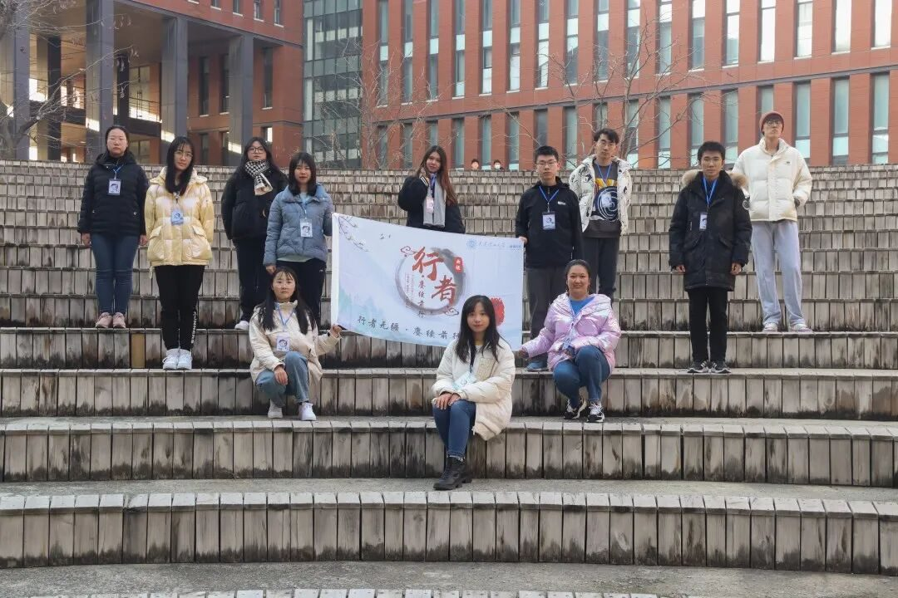

人生天地间，忽如远行客
人生天地间，忽如远行客

烟花三月，春风拂面，行者无疆实践团以“赓续前行”为主题的第十期文化调研就此落下帷幕。我们于风霜雪意之时相逢，去岁旧雪烹茶相与留客，新柳暂借杯中三分色。都说相遇是离别的序言，离别是相遇的伏笔，你看春光不必趁早，冬霜不会迟到，相遇和离别，都是刚刚好。

走进扬州的山水清音，探讨瘦西湖的前世今生，感受扬州本地的人烟辏集；东关街的市井长巷，聚拢来是烟火，摊开来是人间；走进盐商宅院，望高墙翘檐频飞，赏檐额彩绘斐然；聆听企业家立足自身响应环保号召，看文化名人于似水年华中不易其志

错过了长安古意，失约了洛阳花期，也一定要走进内乡县衙，了解一方清官如何守护百姓的人间烟火、市井清欢；在古瓷博物馆与瓷器隔柜相望，纵然时光流逝，文明之火不灭。
张掖远山辽阔，东风历历，楼上观山，城头观雪，虽不能至，心向往之。游艾黎捐赠文物博物馆，古物不再尘封，历史不再褪色；逛威武文庙，拜文人志士将历历山河、悠悠文脉积淀于笔端。
我们栖息的这个旖旎国度，她敞开臂膀拥抱平原薄暮、山岚雾霭，她欣赏千里冰封万里雪飘的北国风光，也留恋流水淙淙两岸踏歌的温婉江南。这片土地孕育了万千生灵，她允许碰撞，容纳冲突，和而不同，也诞生新的希望。行者无疆，行而不辍，我们有去路终己不顾的孤勇，亦有客途甘之如饴的诉梦，人生天地间，忽如远行客。
对于文化，虽有“前人之述备矣”，但我们也应在文化自信的同时文化自省，思之鉴之，随时代律动，尚古而自新，化形而固本，将悠悠千载的文化积淀绵延赓续。文化苦旅，自有满河长风苍苍相随；秉承前志，赓续前行，没有什么终点比天地逆旅更远。文化传承道阻且长，但好在前路有光。
来源 | 行者无疆实践团
文字 | 高懿玢
排版 | 韩俊
审核 | 温兆琪 朱华玮